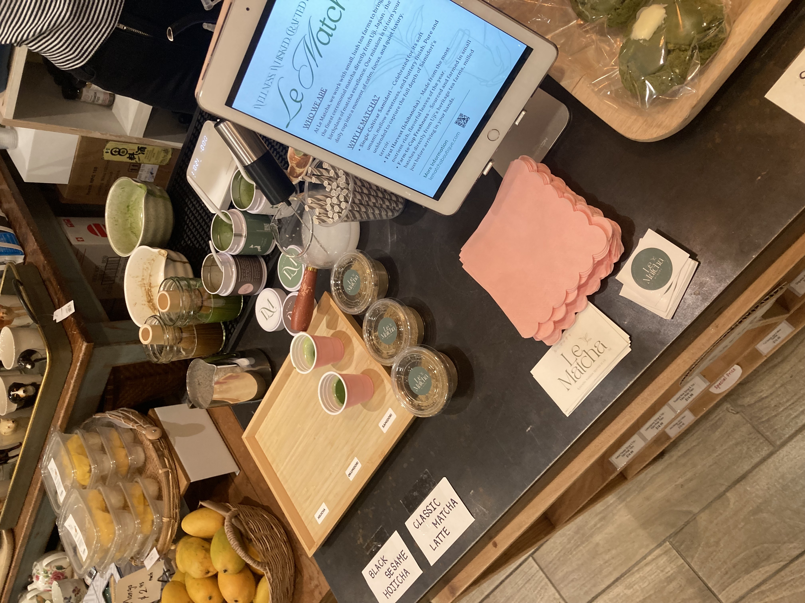
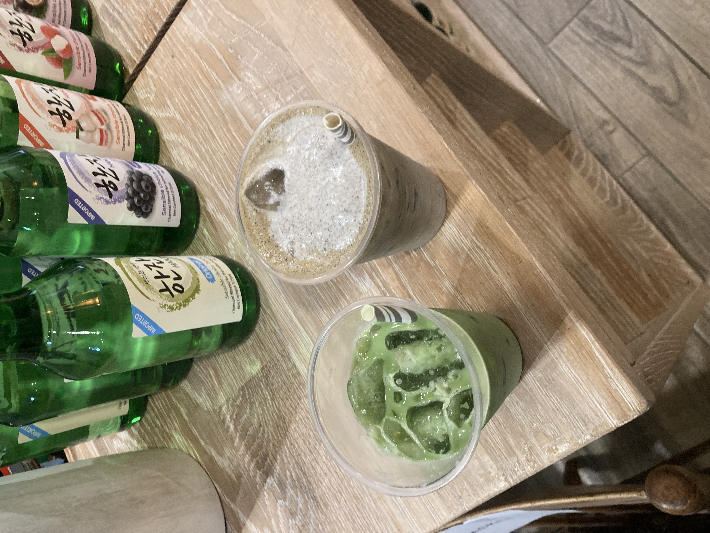

Le Matcha Review: Tasting Samples at Rice Market
I have been seeing this matcha brand, Le Matcha, on Instagram lately, but didn’t know much about them. The last time I tried a popular fancy matcha brand from Instagram, I was actually disappointed, so my hopes for Le Matcha were not that high.
A friend of mine sent me an Instagram post about Le Matcha doing a popup in Rice Market. I love Rice Market, happened to be off of work that day, and had a friend going, so I said I was down to go despite not having high hopes for the matcha itself.
Matcha Sampling (and Hojicha!)
I arrived early, but I was impatient so I headed into Rice Market, knowing I’d be back later to meet Genevieve. To my surprise, there was no line! To my second surprise, the samples were completely free! They were offering two matchas as well as a hojicha to sample. It goes without saying, I tried everything.
- Samidori Matcha: as a tea, prepared with just water
- Okumidori Matcha: as an iced latte
- Hojicha: as an iced latte, topped with black sesame cold foam
All three of the teas are single origin, sourced from Uji, Japan. There were also some treats for sale as well :)
Matcha Cultivars
I wanted to learn about different matcha cultivars, but the information online is pretty limited. Let me know if you have any recommended resources to learn more!
Okumidori:
Okumidori translates to “deep green.” This cultivar is known for its deep green color, rich and umami-forward flavor, and low bitterness. When prepared correctly, the texture is almost like velvet, smooth and creamy. It’s a late-budding variety, which helps in avoiding damage due to frost.
It’s a hybrid of the Yabukita cultivar and Shizuoka Zairai #16. Yabukita is the prevalent cultivar grown and used in Japan today, and Shizuoka Zairai #16 is an heirloom cultivar, as indicated by the word “Zarai,” originating from Shizouka, Japan.
Okumidori is considered sweet and nutty, typically, with a clean finish, making it ideal for a matcha latte and also suitable for koicha and usucha. Koicha is a thicker tea preparation of matcha, while usucha is a thinner preparation, both using just matcha powder and water. I tasted it in an iced latte. Immediately I felt that it was very well balanced, a rounded, creamy, and smooth mouthfeel and flavor. In the latte, the matcha flavor itself was on the mild side, being overpowered by the milk. Due to the nutty and sweet-forward flavor, this is still a great choice as a beginner matcha or a matcha to use for lattes and desserts. I could detect some vibrance and brightness in the matcha flavor, so I think it would be enjoyable without milk as well, if not a bit simple/boring.
The 30g tin of Okumidori matcha is being sold at Rice Market for $38.
Samidori:
This cultivar was being sold as the higher end option, noting that it was also a first harvest offering. Samidori is native to Uji and known for being bright green. It has a longer harvest window and is also quite cold tolerant. It grows upright, shaded for about 3 weeks to increase the chlorophyll and amino acid content.
Its flavor profile is also considered umami-forward, sweet, and smooth with little bitterness and a clean finish. Additionally, it has more aromatic notes and a subtle aftertaste.
When I tasted this, as a tea, I definitely felt the smoothness, sweetness, and umami-forward profile with more layers of complexity than the Okumidori. There was a specific note in the aftertaste that lingered, perhaps slightly astringent, but I can’t decide the right word to describe it. However, this lingering note made me think that, for a latte, this matcha might do well diluted by a little bit of the Okumidori.
The Samidori was priced at $55 for a 30g tin.
Hojicha:
The hojicha, priced at $28 for a 30g tin, was very smooth and creamy. It had a natural sweetness and blended with milk exceptionally well. However, it lacked some of the bitterness, roasted notes, and complex flavors that one might desire. It was on the more subtle side, with minimal aftertaste, making it suitable for lattes but risking being overpowered by flavors and not having enough to it to stand on its own.
It’s worth noting that currently on the Le Matcha website, both the Samidori matcha and the hojicha are listed at $25 per 30g tin (+ shipping), and the Okumidori is not included on the site.